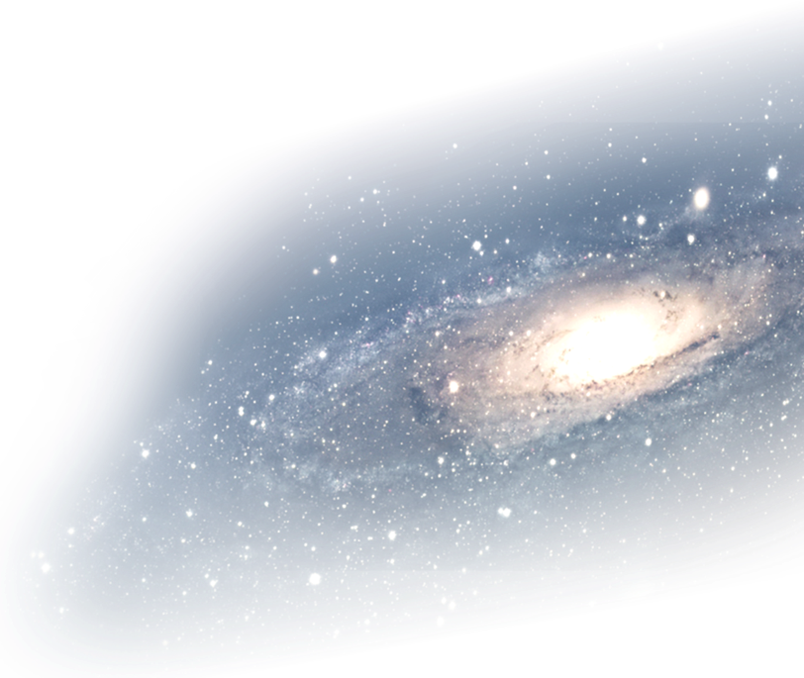

Вселенная
Бесконечное пространство, окружающее нашу планету и простирающееся в самые отдалённые уголки пространства.
Это царство звёзд, галактик, туманностей и чёрных дыр и космоса. Сама Вселенная постоянно расширяется, но нужно понимать, что вселенная становится больше за счёт увеличения расстояние между галактиками. Диаметр наблюдаемой Вселенной оценивается в 93 миллиарда световых лет, где один световой год это 9,46 триллионам километров.
